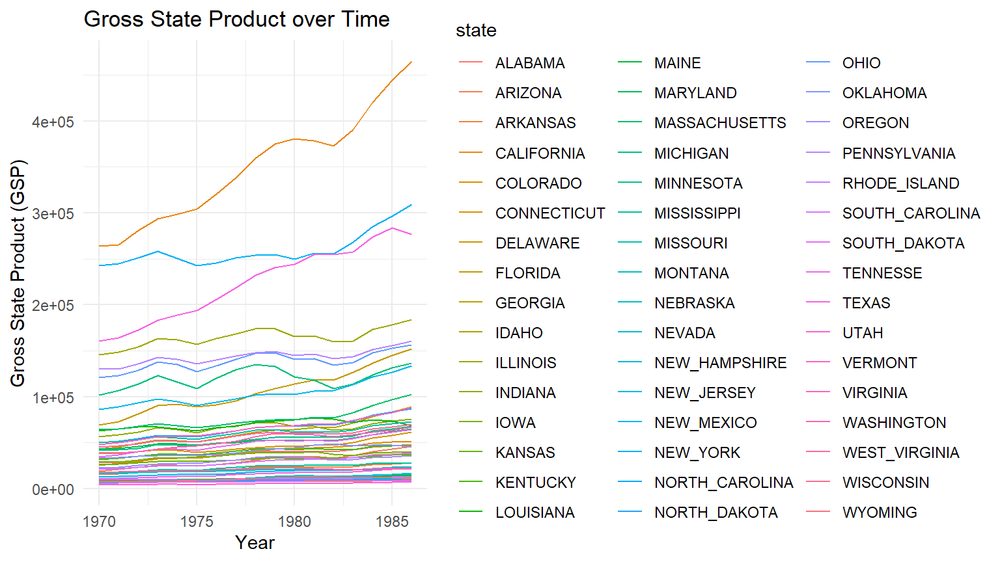
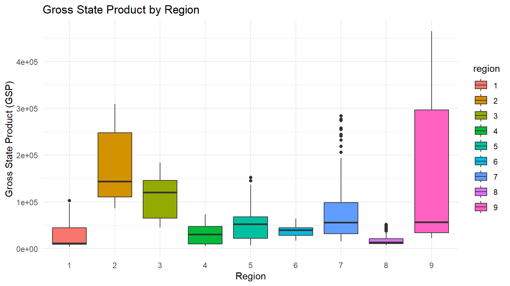
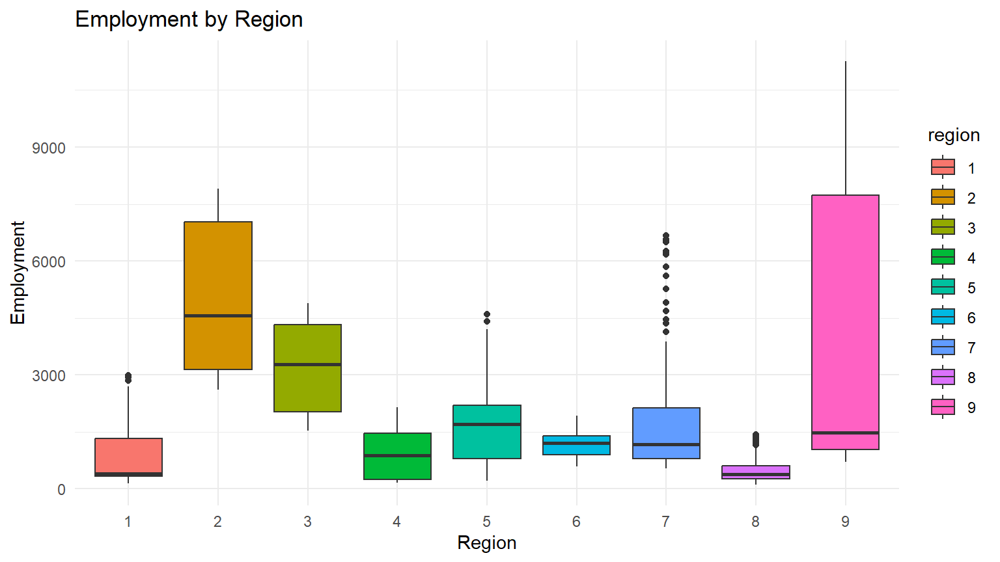
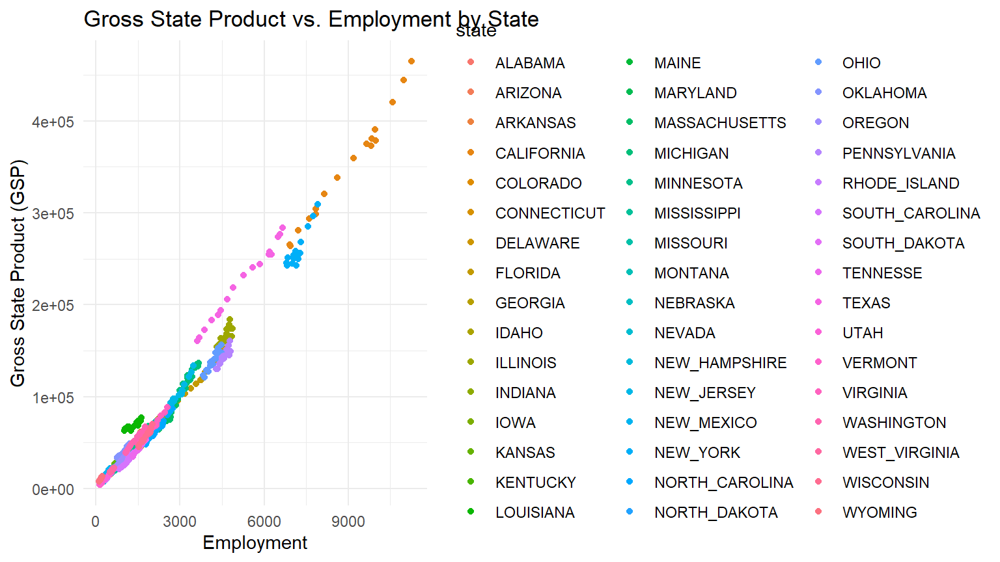

Panel Data Modeling in R
Introduction
This presentation demonstrates panel data modeling using the plm package in R. We will use the Produc dataset, which contains data on gross state product in the United States.
Load Libraries and Data
Data Description
The Produc dataset contains the following variables:
-
state: State name -
year: Year -
region: Region -
pcap: Real per capita personal consumption expenditures -
hwy: Real per capita “highway” expenditure -
water: Real per capita “water” expenditure -
util: Real per capita “utility” expenditure -
pc: Real per capita net income -
gsp: Real gross state product -
emp: Employment -
unemp: Unemployment rate
Ploting GSP over Time
ggplot(Produc, aes(x = year, y = gsp, color = state)) +
geom_line() +
theme_minimal() +
labs(title = "Gross State Product over Time",
x = "Year",
y = "Gross State Product (GSP)")
Correlation plot
Boxplot of GSP by Region
ggplot(Produc, aes(x = region, y = gsp, fill = region)) +
geom_boxplot() +
theme_minimal() +
labs(title = "Gross State Product by Region",
x = "Region",
y = "Gross State Product (GSP)")
Boxplot of Employment by Region
ggplot(Produc, aes(x = region, y = emp, fill = region)) +
geom_boxplot() +
theme_minimal() +
labs(title = "Employment by Region",
x = "Region",
y = "Employment")
Scatterplot of GSP vs. Employment by State
ggplot(Produc, aes(x = emp, y = gsp, color = state)) +
geom_point() +
theme_minimal() +
labs(title = "Gross State Product vs. Employment by State",
x = "Employment",
y = "Gross State Product (GSP)")
Unit Root Tests
pcap hwy water util pc gsp emp unemp
0.01 0.01 0.01 0.01 0.01 0.01 0.01 0.01 Fit Pooled OLS Model
Pooled OLS model
Pooling Model
Call:
plm(formula = gsp ~ emp + unemp + pc, data = Produc, model = "pooling")
Balanced Panel: n = 48, T = 17, N = 816
Residuals:
Min. 1st Qu. Median 3rd Qu. Max.
-26662 -4069 1503 3784 40850
Coefficients:
Estimate Std. Error t-value Pr(>|t|)
(Intercept) -3.8305e+03 8.0097e+02 -4.7824 2.057e-06 ***
emp 3.0144e+01 3.2554e-01 92.5964 < 2.2e-16 ***
unemp -3.4768e+02 1.1538e+02 -3.0133 0.002665 **
pc 2.4878e-01 1.0142e-02 24.5292 < 2.2e-16 ***
---
Signif. codes: 0 '***' 0.001 '**' 0.01 '*' 0.05 '.' 0.1 ' ' 1
Total Sum of Squares: 3.9905e+12
Residual Sum of Squares: 4.2567e+10
R-Squared: 0.98933
Adj. R-Squared: 0.98929
F-statistic: 25103.7 on 3 and 812 DF, p-value: < 2.22e-16Fixed Effects Model
Oneway (individual) effect Within Model
Call:
plm(formula = gsp ~ emp + unemp + pc, data = Produc, model = "within")
Balanced Panel: n = 48, T = 17, N = 816
Residuals:
Min. 1st Qu. Median 3rd Qu. Max.
-12824.8 -912.6 -50.2 720.4 20701.7
Coefficients:
Estimate Std. Error t-value Pr(>|t|)
emp 34.611677 0.926593 37.3537 < 2.2e-16 ***
unemp -289.266470 59.882397 -4.8306 1.645e-06 ***
pc 0.134576 0.021505 6.2579 6.495e-10 ***
---
Signif. codes: 0 '***' 0.001 '**' 0.01 '*' 0.05 '.' 0.1 ' ' 1
Total Sum of Squares: 1.3289e+11
Residual Sum of Squares: 5628300000
R-Squared: 0.95765
Adj. R-Squared: 0.95488
F-statistic: 5765.77 on 3 and 765 DF, p-value: < 2.22e-16Random Effects Model
Oneway (individual) effect Random Effect Model
(Swamy-Arora's transformation)
Call:
plm(formula = gsp ~ emp + unemp + pc, data = Produc, model = "random")
Balanced Panel: n = 48, T = 17, N = 816
Effects:
var std.dev share
idiosyncratic 7357308 2712 0.132
individual 48523782 6966 0.868
theta: 0.906
Residuals:
Min. 1st Qu. Median 3rd Qu. Max.
-12212 -893 153 873 20740
Coefficients:
Estimate Std. Error z-value Pr(>|z|)
(Intercept) -4347.08517 1193.82256 -3.6413 0.0002712 ***
emp 33.06917 0.73227 45.1600 < 2.2e-16 ***
unemp -331.96706 57.93287 -5.7302 1.003e-08 ***
pc 0.16804 0.01800 9.3353 < 2.2e-16 ***
---
Signif. codes: 0 '***' 0.001 '**' 0.01 '*' 0.05 '.' 0.1 ' ' 1
Total Sum of Squares: 1.6699e+11
Residual Sum of Squares: 6012600000
R-Squared: 0.96399
Adj. R-Squared: 0.96386
Chisq: 21740.2 on 3 DF, p-value: < 2.22e-16Hausman Test
hausman_test <- phtest(fixed_effects, random_effects)
hausman_test
Hausman Test
data: gsp ~ emp + unemp + pc
chisq = 7.9388, df = 3, p-value = 0.04729
alternative hypothesis: one model is inconsistentModel comparison Breusch-Pagan test
bp_test <- plmtest(fixed_effects, effect = "twoways", type = "bp")
bp_test
Lagrange Multiplier Test - two-ways effects (Breusch-Pagan)
data: gsp ~ emp + unemp + pc
chisq = 4755.8, df = 2, p-value < 2.2e-16
alternative hypothesis: significant effectsModel comparison F-test
f_test <- pFtest(fixed_effects, random_effects)
f_test
F test for individual effects
data: gsp ~ emp + unemp + pc
F = 1.1113, df1 = 47, df2 = 765, p-value = 0.2856
alternative hypothesis: significant effectsRobustness Check with Clustered Standard Errors
t test of coefficients:
Estimate Std. Error t value Pr(>|t|)
emp 34.611677 2.731771 12.6701 < 2e-16 ***
unemp -289.266470 123.251462 -2.3470 0.01918 *
pc 0.134576 0.069376 1.9398 0.05277 .
---
Signif. codes: 0 '***' 0.001 '**' 0.01 '*' 0.05 '.' 0.1 ' ' 1Summary
This presentation demonstrated panel data modeling using the plm package in R. We covered data exploration, unit root testing, fitting pooled, fixed, and random effects models, and comparing these models using statistical tests.
These results can help us understand the relationships between gross state product and other economic indicators while accounting for individual state effects.
From this analysis, we can conclude that the fixed effects model is preferred over the random effects model based on the Hausman test results. The pooled OLS model is not appropriate due to the presence of individual-specific effects.